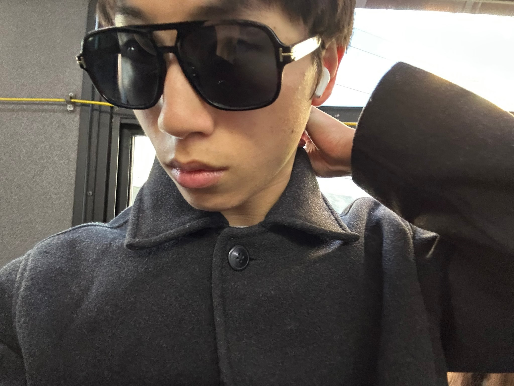

| Isid Or | |
|---|---|
|
 Isid Or in 2026
|
|
| Background information | |
| Birth name | Isidore Lu |
| Born | 2004 San Francisco, California, U.S. |
| Education | Carnegie Mellon University |
| Genres | Electropop Hyperpop J-pop |
| Occupations | Musician Creative director Writer Designer Technologist Event producer |
| Instruments | Vocals Synthesizer Cello |
| Years active | 2022–present |
| Label | Independent (isid music) |
| Website | isidorelu.com |
Isidore Lu, known as Isid Or, (born 2004) is an American musician, creative director, writer, designer, technologist, and event producer. His work blends experimental electronic music with commercial pop, drawing on the hyperpop scene of the early 2020s and on Japanese and Korean idol pop, and extends across music video, visual design, writing, and nightlife.[1][2]
Isid Or released the Japanese-language mini-album Sincerely, Mr. Love & Pop in 2026, alongside a self-financed music video for "Everything," merchandise lines, and a series of events in New York City under his creative studio, ISIDORELU.COM.[3][4][5][6] He also writes essays on music, media, and culture.[7][8]
Education
Isid Or was born and raised in San Francisco, and spent a year and a half in Tokyo as a young child, attending kindergarten there. He is Taiwanese-American and grew up speaking English and Mandarin at home.[3] From age eight to 16 he trained in ballet and contemporary dance at the San Francisco Ballet School, on a full scholarship, and at ODC.[8] He also played the cello and worked in theatre at Lowell High School, where his senior quote was SOPHIE's lyric "I could be anything I want."[9]
Isid Or studies music and computer science at Carnegie Mellon University and is expected to graduate in 2027.[7][8] He chose not to transfer into the university's electronic music BFA after taking a course with Freida Abtan, who had earlier taught PC Music founder A. G. Cook at Goldsmiths.[9] He has since written critically about the university's technical culture,[8] and in fall 2026 he began reorienting his studies around his creative work.[9]
Work and career
Isid Or began producing music at 13. He is self-taught as a singer, producer, and engineer, having learned largely through the online hyperpop and URL festival communities on Twitter during the 2020 lockdown.[2][4] In 2022, he interned at the New York experimental label unseelie, where he worked on the album campaign for Yikii's The Crow-Cyan Lake and translated its lyrics from Mandarin.[9] He began releasing music as Isid Or that same year, and followed with two compilation EPs, Thrill: EP (2023) and Listening To New Songs (2025).[9]
In 2025, Isid Or interned at Baobab Studios under director Eric Darnell, building AI tools. Afterward he turned away from technical work toward an independent creative career.[7][10] In 2026, he began publishing essays on Substack and Instagram,[7][11] appeared as the lead in Lolo Zouaï's music video "Baggy Jeans,"[12] and spent the summer in New York on a budget he set aside from his savings, building ties across the city's creative, nightlife, and publishing scenes.[1][4]
There he executive produced and creative directed the music video for "Everything," the single from Sincerely, Mr. Love & Pop. He financed it himself and assembled a full cast and crew.[3][4] He promoted the record with merchandise lines and events under ISIDORELU.COM, which included an end-of-summer party in July, co-hosted with Blizzy McGuire and sponsored by Life After Trance,[13] and a J-pop night at Kodansha House in Hudson Yards in October.[14][15] That year, he also worked as audio supervisor and composer for Kodansha House's pop-ups in Los Angeles and New York, scoring five immersive activations.[5]
Artistry
Isid Or approaches his career as a single interdisciplinary work. Alongside music, he directs his own visuals, photography, styling, and video, writes criticism, produces events, and designs and codes his own websites, an approach he attributes to years of working with few outside resources.[3][9] His work often explores themes of idolatry, self-reference, idealism, canonization, self-mythology, and escapism. He has described building a career as a pop star as itself part of the art, and treats self-actualization as central to his practice. He has described being inspired by the New Journalists.[9]
His work treats pop as a sincere art form, an idea he places in a lineage running from Andy Warhol through postmodernism to PC Music.[8] He describes pop as "a byproduct of art in the context of capitalism" and argues that sincerity and irony are not opposites.[3] He has written that his central theme is the tension between the constraints of pop and experimental art that rebels against them, and that he wants to show that freedom can exist within constraint.[8] He has also criticized the engineering mindset that equates beauty with rationality.[16]
Isid Or has said he "learned music from PC Music and the hyperpop scenes," which he discovered in middle school, and names Charli xcx's Pop 2 as his favorite album.[1][8][6] He traces his first memory of pop to watching Perfume perform "One Room Disco" on television in Tokyo at age five.[3][6] He says he learned presentation and performance from Japanese and Korean idol culture, studying in particular how East Asian faces are presented in commercial culture.[1] His other influences include second-generation K-pop groups such as SHINee, Proust, Bret Easton Ellis, Yves Saint Laurent, and the queer, Black DJs of Bushwick nightlife who champion K-pop and J-electropop.[1][10][11]
Isid Or treats each project as a self-assigned study. For years he made sounds only with software synthesizers and recorded through his laptop microphone, and he still mixes on wired Apple earbuds in Logic Pro. He writes in Japanese, which he says produces angular melodies and gives him a distance that allows for more theatricality.[3] He calls Sincerely, Mr. Love & Pop his "technical capstone" in music and plans for his next body of work to serve as a true debut.[9]
Selected work
- Thrill: EP (2023), compilation EP
- Listening To New Songs (2025), compilation EP and music videos; executive producer, creative director, director, lead, editor, colorist, sound mixer
- Lolo Zouaï, "Baggy Jeans" (2026), music video; lead
- Sincerely, Mr. Love & Pop (2026), Japanese-language mini-album, isid music; songwriter, co-producer, mixing and mastering engineer
- "Everything" (2026), music video; executive producer, creative director, lead, editor, colorist, sound mixer
- Kodansha House Los Angeles and New York (2026), five immersive activations; audio supervisor, composer
- ISIDCORE: Sincerely, Mr. Love & Pop End-of-Summer Party (July 29, 2026), Beverly's, New York; co-host, producer
- ISIDCORE: J-Pop Night @ Kodansha House (October 15, 2026), Hudson Yards, New York; host, programmer
- "Early Investor in isid or" T-shirts (2026); designer, producer
Selected writing
- "Updates 6: Distinguishing Online Mutual V.S. Friendship V.S. Professional Colleague" (August 2026), essay, BLOG.ISIDORELU.COM
- "The Music That Shaped My Teens" (May 2026), essay, BLOG.ISIDORELU.COM
References
- ^"Interview with Isid Or". Asian Upcoming. Instagram. June 2026. Photographs by Claire Su. instagram.com/p/DZ8rjOHgGYp.
- ^Or, Isid (May 13, 2026). "The Music That Shaped My Teens". BLOG.ISIDORELU.COM. Substack.
- ^Janghoon (October 2026). "Q&A: Sincerely, Mr. Love & Pop". Instagram. Photographs by Claire Su. instagram.com/p/Ddzq2oigGyc.
- ^Or, Isid (August 9, 2026). "Updates 6: Distinguishing Online Mutual V.S. Friendship V.S. Professional Colleague". BLOG.ISIDORELU.COM. Substack.
- ^"ISIDORELU.COM — Creative Studio". ISIDORELU.COM. November 2026.
- ^"Isid Or". Apple Music. Artist page and Q&A. Retrieved November 11, 2026.
- ^Or, Isid (February 3, 2026). "Updates 3: What Pursuing A Career As An Artist Means To Me". BLOG.ISIDORELU.COM. Substack.
- ^Or, Isid (April 2, 2026). "Artistry Dies At Carnegie Mellon University (Unless You're In The School of Drama)". BLOG.ISIDORELU.COM. Substack.
- ^"Biography questionnaire". ISIDORELU.COM. November 2026.
- ^Or, Isid; Janghoon (December 28, 2025). "Making Pop Music, Hemingway, Prompt Engineering, Charli xcx, & 2nd Gen Idols". BLOG.ISIDORELU.COM. Substack.
- ^Or, Isid (March 2, 2026). "Updates 4: Why I Stopped Idolizing Artists + Contrived Thoughts On Capitalism Being Terrible". BLOG.ISIDORELU.COM. Substack.
- ^Lolo Zouaï (April 24, 2026). "Lolo Zouaï – Baggy Jeans (Official Video)". YouTube. Directed by Annika White and Carl Knight.
- ^"ISIDCORE: Isid Or's Sincerely, Mr. Love & Pop End-Of-Summer Party". Partiful. July 29, 2026.
- ^"ISIDCORE: J-POP NIGHT @ KODANSHA HOUSE". Partiful. October 15, 2026.
- ^"J-POP Night @ Kodansha House". Kodansha House. October 15, 2026.
- ^Or, Isid (March 31, 2026). "Technically-Minded People Will Never Have Great Taste & Ethan Hawke Is Awesome". BLOG.ISIDORELU.COM. Substack.
- 2004 births
- Living people
- Musicians from San Francisco
- American electronic musicians
- American pop musicians
- American people of Taiwanese descent
- Carnegie Mellon University alumni
- Hyperpop musicians